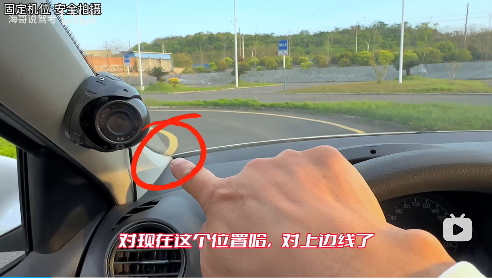
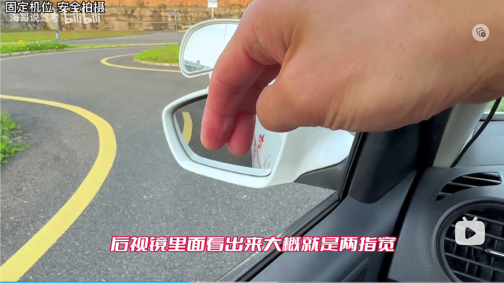
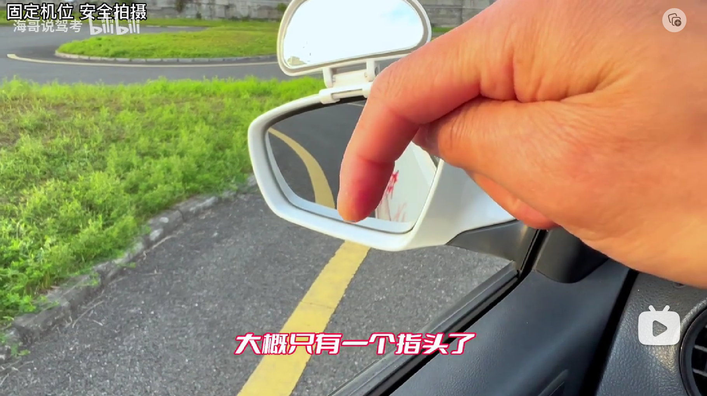
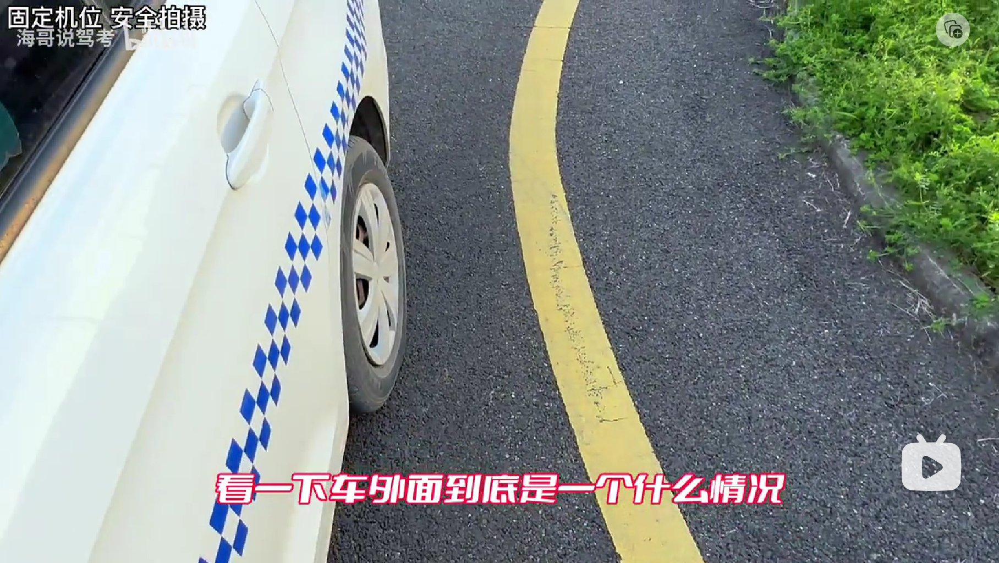
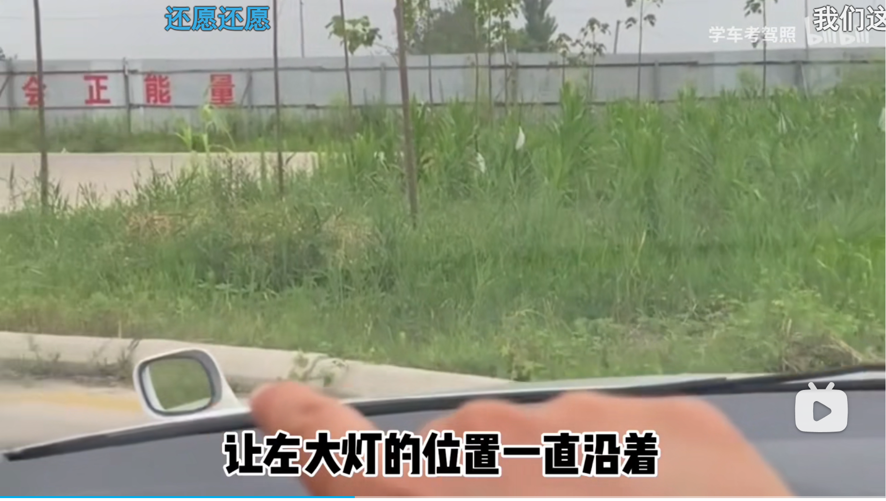
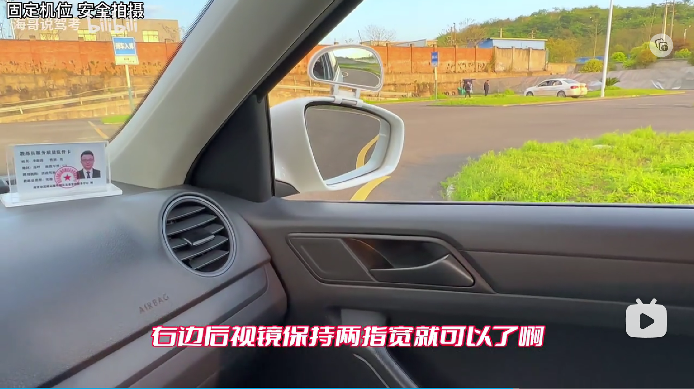
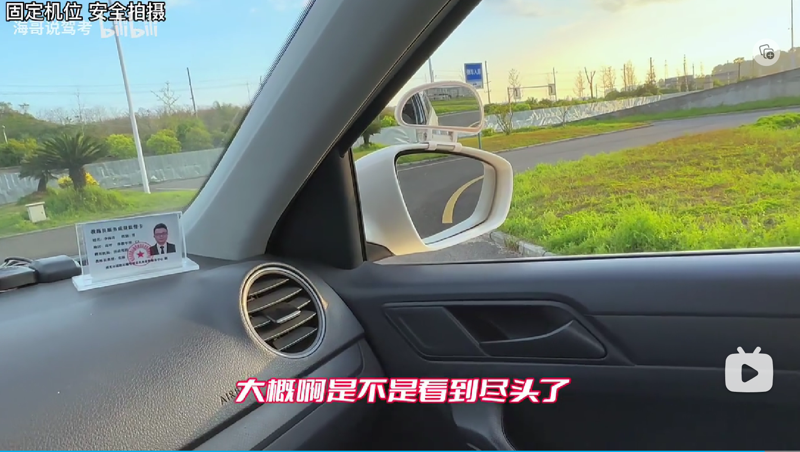
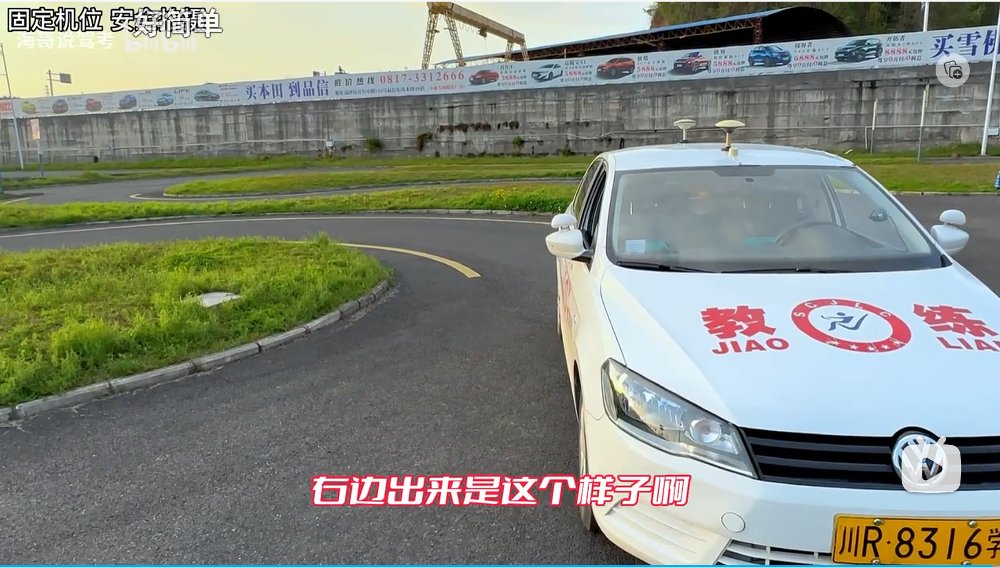
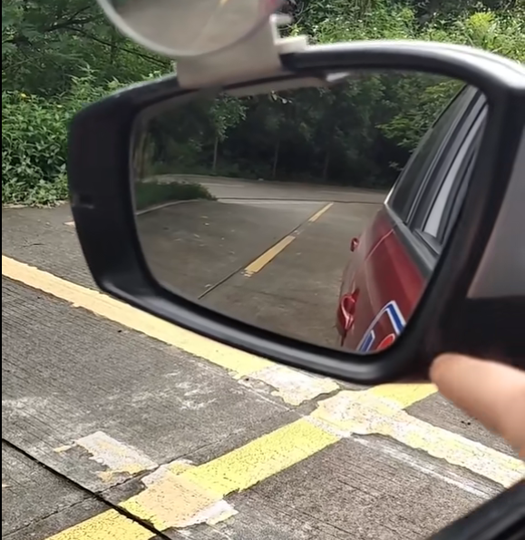

前言
科目二包括4个考试项目，不分先后分别有 1）倒车入库，2）侧方停车，3）S弯和直角弯，4）坡道定点停车。
倒车入口包含4个小项目，按顺序分别是 1）右倒车入口，2）左出库，3）左倒车入库，4）右出库；
侧方停车包含2个小项目，按顺序分别是 1）右方向倒车进入停车位，2）右方向离开停车位；
S弯和直角弯包含2段，先是过左、右弯连续而成的S弯，然后是左转直角弯
半坡定点停车主要考点是上坡，分半坡定点停车，以及半坡停车后的启动。
倒车入库
右入库
人身背向车库的右手边入库。
方向调整
进入考试区域。调整车身，直到人、方向盘与前方左起第三段虚线中点连成一线。调整完成后，观察左边，直到人坐的位置与左边横虚线大概重合，立刻停车，挂倒挡。

向右打死
倒车，观察左镜柄下边缘，直到视觉上柄与横黄线接触，立刻向右打死方向盘，观察右镜。
向左回半圈
观察右镜，确认车身与虚线，直到车身遮完第二段虚线，立刻向左回半圈方向盘，观察左镜。
向左回正
观察左镜，观察车身与左边线差不到平行，立刻回正方向。此时观察左边，确认左肩膀与左边黄点成一线，立刻停车。
左出库
向人左手方向出库。
左打5/4圈
停车挂1挡。确认左边A柱与库口横线，直到连成一线，立刻向左打 5/4 圈，直到左门把手与虚线重合立刻停车。
左入库
人身背向车库，从左手边开始倒车入库。
调整方向盘
挂倒挡，向左打多一节手指方向盘，开始倒车。
向右回方向
观察左镜，直到车身遮完库口虚线第二段虚线，立刻向右回方向盘至剩余一圈。立刻观察右镜。
向右回正
观察右镜中，车身与右边线直到差不多两线平行，立刻向右回正方向盘。观察左边，直到左肩膀与左边 黄点 水平重合立即停车。
注意，停车点在练习场地是黄点，在考场测试第一条白线末尾！见下图。

右出库
从人右手边出库。
起步调整
观察左右后视镜。确认车身与两边线距离，视情况在出库起步时调整：
- 车身与右边线距离太窄：适当向左调整再回正出库，避免右后轮压右库角。
- 车身停止后向右歪：起步适当向右打方向，再回正。避免左后轮压左库角。
向右5/4圈
起步观察左A柱与左库口横线，他们重合时，立即向右打5/4圈方向盘。
回正
出库，转弯至回正车身，立刻回正方向盘离开考试区域。
侧方停车
入库
step1：进入考试区域，调整车辆方向直至方向盘、人和路中间成一线。调整完成后看左镜，观察左边线，直到左镜差不到到左线尽头停车。

step2：停车挂倒挡。倒车同时观察右镜，直到看到右镜中库角（距离车辆最近的入库直角，即上图右边直角）消失，立刻向右打死方向盘。
step3：开始右转后，观察左镜。在左镜中找砖头（下图中第三只脚。转的过程，会看到图中从右到左依次看到1、2、3脚），等到车身与砖头连城一线时，立即回正方向盘（即，第三脚出现在后视镜）。

继续看左镜，观察后轮与库虚线，倒车直到后轮压住虚线，立即向左打死方向盘。观察引擎盖左突起与左边线距离，倒车直到左突起完全越过左线（同时看左镜，确认车身与左边线是否水平），立刻停车。
出库
step1：打左转向灯，后续不用手动取消，回正方向盘回自动取消。
step2：挂1挡，保持入库时的方向盘位置出库。继续直到左突起与最外面的左边线交汇，立刻回正方向盘，继续观察车头，直到引擎盖视觉消失线与左边线交汇点到达前玻璃中点，立刻向右打一圈方向盘，此时直视前方等到车身回正，立刻向左回正方向盘，直到进入休息区。
S弯和直角弯
该项目不限时间，尽量保持慢速通行。
S弯是由两个弯到连续组成，先是左弯，然后是右弯。
S弯-入弯调整
调整车身，保持人、方向盘和道路中间连成一竖线。

扩展技巧
左玻璃夹角对准左边线头

S弯-左打一圈
调整好方向后，准备进入左弯。
坐直身体保持视觉中出现引擎盖左侧突起。观测突起与右边线的接触情况，在两者汇合时，立刻向左打一圈方向盘，保持不动，以此为基础，视情况动态微调方向盘。
如何判断需要动态调整？
方法一：看左镜中，车身与边线距离。在镜中，保持黄线与车身距离2指宽，有正负1指余量；

保持1指宽，经过弯度最大后的情况

方法二：看左车头突起，保持突起与右边线交汇而不越过。

S弯-向右回正
在转完左弯后，继续观察车头左突起继续保持左弯方向盘位置，直到左突起与左边线交汇，此时立刻向右回正方向盘。
S弯-右打一圈
回正方向盘后，观察左边线与引擎盖视觉水平线，注意两线的交汇点，等到交汇点处于后者中点时，向右打一圈方向盘，开始过右弯，然后视情况动态微调整方向盘。
如何判断需要动态调整？
- 方法一：靠左窗，观察（不是从后视镜观察）地面左线与车身距离；
- 方法二：向前看，保持视觉中引擎盖视觉水平线的中点与左边线重合；
- 方法三：观察右镜，保持黄线与镜子玻璃左边缘2指宽；

s弯-结束方向回正
保持右转。
- 方法三的结束点：


直角弯-入弯调整
人、方向盘中心与前方点位（练习场是砖头，考场是右起第二条白线中点）连成一线。

直角弯-向左打死
左门把手竖直对齐弯角，立刻向左打死方向盘。
Q1：何时打左转向灯？
A1：xxx
Q2：何时关闭左转灯？
A2：打完方向盘后。
直角弯-向右回正
保持左转，直到车身回正即可向右回正方向盘。
半坡定点起步
方向调整
人对准前方箭头，见下图。

车已经过箭头后的对点调整：

停车
观察左边，左肩膀对齐第一条横虚线前左侧红色方块的开始竖线即停车。
停车：1）踩尽离合+踩刹车；2）拉手刹。

扩展参考：
左镜下边缘压第二条横线，立即停车。

起步
放下手刹，保持踩住刹车和踩尽离合；
慢松离合直到车身抖动，再多放一点，松开刹车。
附录
参考
需要确认的点位
左镜差不到到左线尽头
考试标准：？
砖头
练习场地特有的点位，以一块砖头标识。实际考场与此略有不同！等待教练通知确认。
俊达驾校
左镜柄与横黄线：下车确认实际车的真实位置（最好拍照）；
车位碰到库前第三段虚线：、
下车确认车的真是位置（拍照、找参照物）；
找人确认后续入库是否压线；
出库（肩膀横向对齐第一段与第二段虚线的缺口）：
- 下车确认位置；
- 确认后续出库是否压线